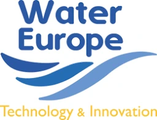
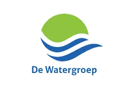
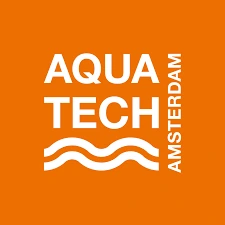

01
Sodium degrades the soil
Saline irrigation water degrades soil structure and reduces crop yield. The damage accumulates over seasons, and it is the sodium rather than the total salinity that does most of it.
Saline irrigation water degrades soil structure and reduces crop yield. Reverse osmosis will desalinate it and send a quarter to a half of the borehole to a disposal problem you may not have. SonixED™ removes sodium and excess TDS selectively, keeps the calcium and magnesium your soil wants, and leaves far less behind.
TDS and sodium are enough to start. We respond within 3 business days.
Assessment request received
Our engineering team will review your water data and respond within 3 business days.
Once in the soil, once in the water you never get to use.
Saline irrigation water degrades soil structure and reduces crop yield. The damage accumulates over seasons, and it is the sodium rather than the total salinity that does most of it.
Calcium and magnesium are beneficial to soil chemistry. A process that removes everything leaves you irrigating with water that has to be corrected before it is useful.
Reverse osmosis typically sends 25–50% of the feed to brine. Where the borehole is the whole supply, that fraction is not a disposal line item — it is the limit on irrigated area.
Morocco is Hydrovolta’s flagship active project: the first commercial demonstration of the integrated SonixED™ desalination and downstream brine valorization model.
Seawater-intruded coastal aquifers at approximately 7,000 ppm TDS. SonixED™ delivers saline water desalination for irrigation and drinking water supply. Residual concentrated brine is processed through downstream valorization for chemical recovery. Funded by the Flanders Climate Action Program.
Irrigated area served [PLACEHOLDER ha] · product TDS [PLACEHOLDER ppm] · recovery [PLACEHOLDER %] · in operation since [PLACEHOLDER].
SonixED™ is electrodialysis reversal with ultrasound-assisted scaling control and a selective membrane coating.
The membrane coating determines which ions move. Sodium and excess TDS are removed; calcium and magnesium are retained, so the water arrives at the field already suited to the soil.
Recovery of up to 98% in suitable applications, with 2–5% residual brine in selected cases. In an arid geography that difference is irrigated hectares.
Acoustic cavitation prevents scaling at nucleation. Hard, silica-laden groundwater is the normal case in irrigation, not the exception, and it is what defeats conventional membranes.
Brackish boreholes in the 1,500–20,000 ppm TDS range. Sodium-dominated salinity damaging soil structure. Arid sites where disposal is constrained and every cubic metre counts. Schemes that want a pilot before committing capital.
Full seawater, where SWRO is typically preferred. Sources whose problem is organic or microbiological rather than ionic. Schemes that genuinely want demineralised water, which is a different process.
For a containerised unit you can site at the scheme, see SalinBloc™ and engineered systems →
TDS, sodium, hardness, target flow and irrigated area are enough to start. We tell you honestly when SonixED™ is not the right answer for your source.
Institutional partners & backing


